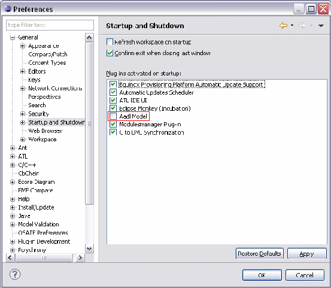

TOPCASED 4.2.0 - Release Note
Table of contents
Batch modes (Document generators, Model simulation, TPG)
TOPCASED is based on Helios Platform (Eclipse 3.6.1), and requires a Java Runtime Environment 1.5 or 1.6 (Java 5 JRE recommended). You can download it as a standalone application or install it directly through the Eclipse installation manager. For more information, please refers to the installation guide: TOPCASED Installation Guide
You can download the features described below from the TOPCASED update-site:
http://topcased-mm.gforge.enseeiht.fr/release/topcased4.2.0/
TOPCASED Toolkit Features includes:
Java Extension For UML Editor: Java Extension provides Java importer to UML and Java generator from UML.
Topcased Core Feature: Topcased Core Feature is a prerequisite for all others Topcased features.
Topcased Document Importer: Topcased Document Importer enables to import any document format and convert it into a model.
Topcased Document Importer for UML: This feature depends on Topcased Document Importer. It is required in order to use UML Profile mechanism during document import.
Topcased Modeler Toolkit: Topcased Modeler Toolkit is a required feature for all modeling capabilities.
Topcased OCL Tools: Topcased OCL Tools provides OCL features such as model checker, editor and documentation.
Topcased Requirement: Topcased Requirement feature provides capabilities for requirements management.
Topcased SAM Editors: Topcased SAM Editors Feature provides graphical editors for SAM.
Topcased SysML Editors: Topcased SysML Editors Feature provides graphical editors for SysML language.
Topcased Templates Tool: Topcased templates tools provides features to convert a Topcased project or model to a template.
Topcased UML2 Editors: Topcased UML2 Editors Feature provides graphical editors for UML2.
TOPCASED Incubation Features includes:
C Extension for UML Editor: C Extension provides C importer to UML and C generator from UML.
Text editors add-ons: This feature contains minor - but useful - add-ons for eclipse text editors like alphabetical sort of lines.
Topcased Abstract User Interface: Topcased AUI provides Abstract User Interface Editor.
Topcased Adele: Topcased Adele provides AADL editor.
Topcased Editor Generator: Editor Generator enables to generate GEF editors for TOPCASED.
Topcased Gendoc: Gendoc provides documentation generation capabilities for odt and docx format, using acceleo templates.
Topcased Gendoc 2: Gendoc 2 provides documentation generation capabilities for odt and docx format, using acceleo scripts written directly inside the template document.
Topcased Gendoc for AUI: Gendoc for AUI provides documentation generation capabilities with Abstract User Interface management.
Topcased Gendoc for Requirements: Gendoc for Requirements provides documentation generation with requirements management.
Topcased Gendoc for UML: Gendoc for UML provides documentation generation with UML and SysML management.
Topcased Gendoc SAM: Documentation Generation for SAM.
Topcased Incubation: Topcased Incubation contains transverse experimental plug-ins.
Topcased Python Generator: UML2Python translates UML Class diagram to Pyhton language.
Topcased Simulation: Topcased Simulation provides the generic part of the simulation.
Topcased Simulation for SAM: Simulation capabilities for SAM.
Topcased Simulation for SysML: Simulation capabilities for SysML.
Topcased Simulation for UML: Simulation capabilities for UML.
Topcased SMUC: SMUC provides generators for UML State machine diagrams and SAM.
Topcased TPG SAM: Topcased TPG provides test generation for SAM.
Topcased Tramway: Topcased Tramway provides traceability feature.
Topcased UML2RTSJ: UML2RTSJ provides translation from UML diagrams to Real time Java code with RTSJ.
TOPCASED External Tools:
gPM, our generic changes manager, is available here:
http://gforge.enseeiht.fr/frs/?group_id=63
If you plan to use subversion, we suggest using Subversive: Update Site is a part of Helios Update Site. Look at Help > Install New Software... > select Helios - http://download.eclipse.org/releases/helios > Collaboration Tools
You can find more information on the official TOPCASED website.
A new section "Indicators" was been created to show statistics on some components.
Users support
Help is available through the 'Help > Help Contents' menu of TOPCASED.
However if you have any questions, you can get support through the TOPCASED Users mailing list: topcased-users@lists.gforge.enseeiht.fr
To be able to use the mailing-list, don't forget to subscribe to it, first.
Developers support
You may find information on the dedicated developers page of the TOPCASED official website.
If you have any questions, you can also use the TOPCASED developers mailing list and sending your questions to: topcased-devel@lists.gforge.enseeiht.fr
Report a bug:
To report a bug against TOPCASED, create a new entry on our bug tracker.
You need to be logged on the site to be able to create an entry.
Ask for a new feature
To ask for a new feature on TOPCASED, create a new entry on our feature tracker.
You need to be logged on the site to be able to create an entry.
TOPCASED Contact
TOPCASED is a collaborative project: if you are interested in helping in some aspects of our technical roadmap (or in extending it), you may contact us at topcased-contact@list.gforge.enseeiht.fr. Your participation is welcome.
When you try to validate your model, there is a validation error due to a particular new EMF validation rule. This is a known issue opened in Eclipse bugzilla: https://bugs.eclipse.org/bugs/show_bug.cgi?id=320318
Error message:
The opposite features 'namespace' or 'ownedMember' of X and Y do not refer to each other. Unknown EMF Problem
Batch mode is not working if the shell current directory is the same than the source model.
A project named Plugin_Resources is automatically created in your fresh new workspace. This project comes from OSATE and is only used for AADL modeling. We plan to solve that problem in the next release (see bug 3396). There is a workaround to avoid this behavior. You can disable AADL startup in preferences. Then you can delete the Plugin_Resources project, it will not appear anymore.

TOPCASED integration platform has been updated for this release. TOPCASED is now built on Hudson and Buckminster. This platform enables to be compliant with p2 site format, improve continuous integration and will help us to provide update-site integration soon.
General
Implemented Features Request: no feature request implemented
Fixed Bugs:
Packaging
Implemented Features Request:
|
3442 |
[Packaging] org.topcased.modeler.DI should be independant from OCL |
|
3445 |
[Packaging] RichText plug-ins in Topcased should be renamed to org.topcased.richtext.* |
|
3446 |
Fixed Bugs:
|
2322 |
|
|
3368 |
[Packaging] High level features should not directly include features ou plug-ins |
|
3373 |
[Packaging] Topcased zip files should be replaced by repository archives |
All Editors
Implemented Features Request:
|
3454 |
Topcased should provide a script to fix anchors in the diagram model |
|
3467 |
[Preference] It should be possible to set preference for the 'Note' element |
Fixed Bugs:
UML Editor:
Implemented feature requests:
Fixed Bugs:
SysML Editor
As Sysml editor inherits from UML editor, you should also have a look at the UML Editor for enhancements.
Implemented feature requests:
|
3474 |
|---|
Fixed Bugs:
Sam Editor
SAM Requirements now uses generic Topcased requirement module (see Topcased requirement section).
Implemented feature requests: no feature request implemented.
Fixed Bugs:
AUI Editor
Implemented feature requests: no feature request implemented.
Fixed Bugs: no bug fixed
OCL Tools
Implemented Feature Requests: no feature request implemented
Fixed Bugs: no bug fixed
Java to UML
Several fixes on Java Extension For UML Editor:
* interfaces implementations enhancement : interface realization type resolution.
* partial reverse improvement: merge enhancement of reversed model into the target one.
Documentation Generator
Implemented Feature Requests:
|
3402 |
|---|
Fixed Bugs: no bug fixed
Implemented Feature Requests:
|
3415 |
Reveal many elements selected in the current requirement view in the editor |
|---|---|
|
3447 |
Provide decorators for Elements with Current Requirement linked to it |
Fixed Bugs:
Test Plan Generator
Implemented Feature Requests: no feature request implemented
Fixed Bugs: no bug fixed
HTML Export
Implemented Feature Requests: no feature request implemented
Fixed Bugs: no bug fixed
Scripting
Implemented Feature Requests: no feature request implemented
Fixed Bugs: no bug fixed